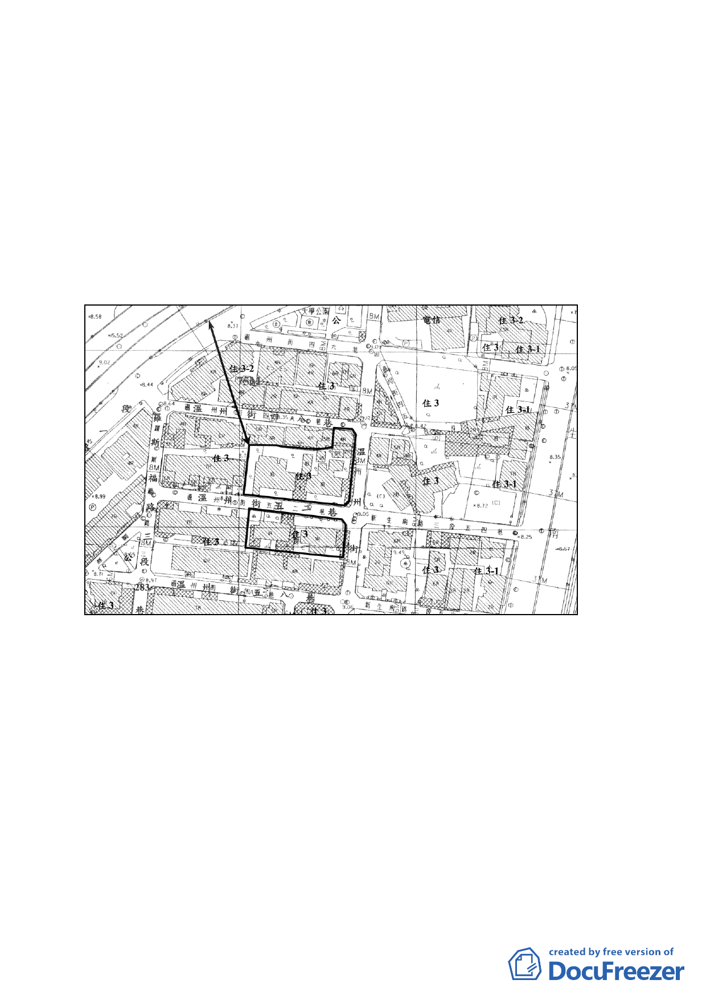

劃設之更新單元，面積約 3,163 平方公尺。
二、本案土地使用分區為住三(建蔽率 45％、容積率為 225％)，單
元內現有 14 棟建物，3 棟為合法建築物，屋齡逾 30 年，以住
宅使用為主。
三、本更新單元土地權屬公有佔 95.64％、私有為 4.36％，合法建
物權屬公有佔 38.01％、私有為 61.99％。公有土地以台灣大
學管有者佔大部分。
四、本件係市府以 98 年 5 月 7 日府都新字第 09830156600 號函送
到會。
辛亥路一段
圖 1 更新單元位置圖
新
生
南
路
- 14 -